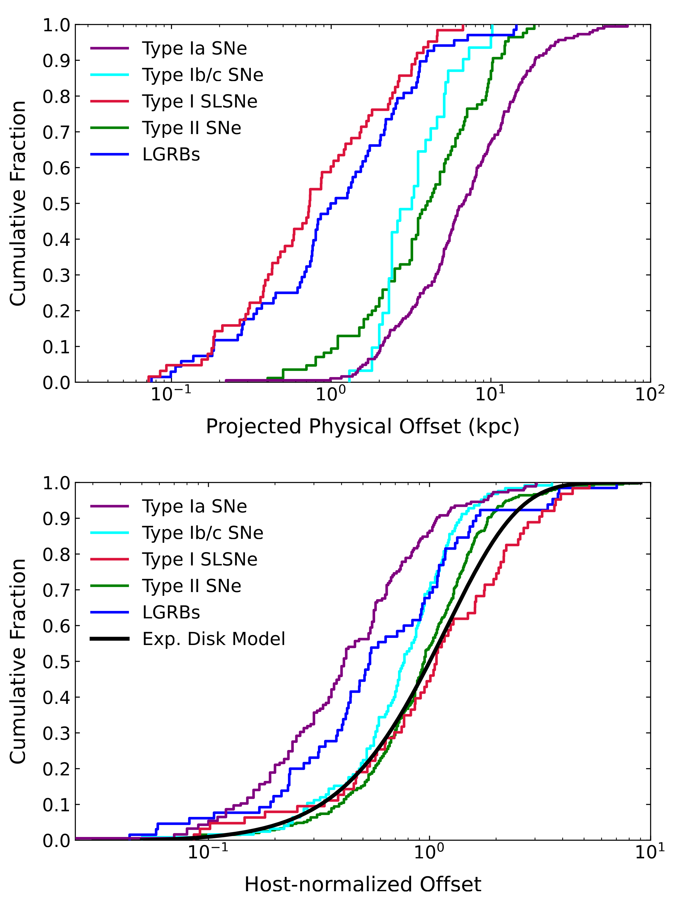
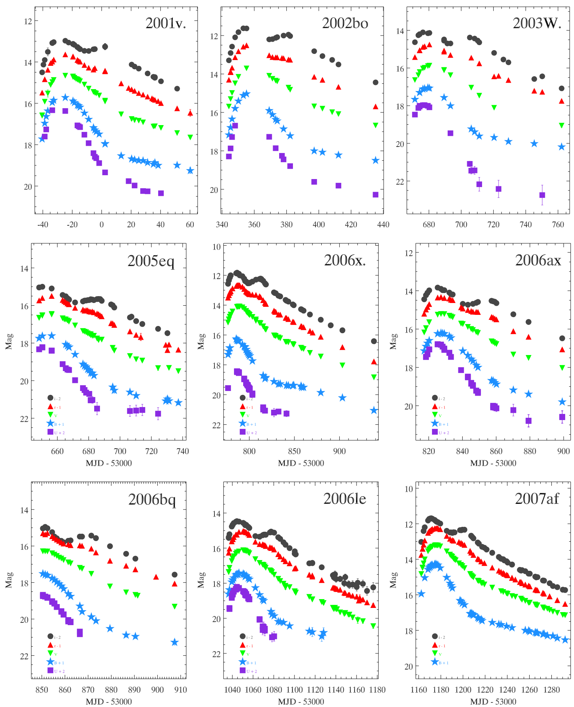
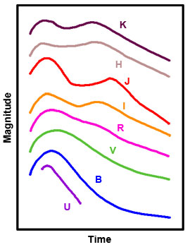
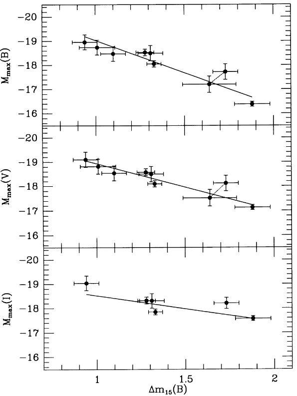

Materials: Hansen & Kawaler book Sec. 2.6.3, Arnett 1982, Phillips 1993, Filippenko 1997, Shen & Bildsten 2007, Hillebrandt & Niemeyer 2000, Maoz & Mannuci 2012, Wolf et al. 2013, Dimitriadis 2026
Time domain astrophysics is much more than just CCSNe
We have discussed in the core-collapse lecture the collapse of an iron (or in some cases ONeMg) core and how it can trigger the SN explosion of a massive star. The transient zoology is bigger than just SNe. With the expansion of observational capabilities in cadence, depth, wavelength ranges and availability of progenitor catalogs and star formation maps for host galaxies, we now can detect a wide variety of transients:

Understanding the physics driving each of these transients, their astrophysical host galaxies and parent populations, their absolute and relative rates is a very active topic of research.
Explosion of WDs
In this lecture, we will instead discuss explosions of low-mass stars ending their life as WDs, indicated as "thermonuclear SNe" in the figure above.
In isolation, a WD can only cool down, possibly releasing some latent heat to slow down the cooling if/when it crystallize, and continue cooling further afterwards, until it becomes too faint and cold to be detected. Theoretically, this should eventually produce a "black dwarf" (in a time longer than the age of the Universe).
While in a hypothetical "black dwarf" the density may be so high that density-driven nuclear reactions (pico-nuclear reactions) could occur and start a dynamical phase of evolution (e.g., Caplan 2020), the fact that the Universe is too young to have formed black dwarfs guarantees that this is not part of the transients we do observe.
Conversely, a WD that is not in isolation, but instead is part of a binary system, may be perturbed by the companion (e.g. during a mass-transfer phase), which can also lead to dynamical and explosive consequences. Here, we focus on these explosions, and more specifically the ones that will result in a full destruction of the WD – so called SNIa.
Accreting WDs: a zoo within the transients zoo
Recall that a WD is "cold" from the point of view of the structure (because the electron degeneracy pressure dominates and is independent of \(T\ll\varepsilon_{\rm Fermi}/k_{B}\)), but on the HR diagram they populate the region on the left of the ZAMS: their effective temperatures are higher than main-sequence stars, which is important for the radiative transfer in their envelopes and ultimately observational properties.
If a WD can accrete mass from a companion star (of any type), several outcomes are possible depending on the accretion rate, composition of the accreted matter, cooling time of the added material, etc.

MESA simulations of accreting WD at fixed \(\dot{M}\). Modified from Fig. 1 in Wolf et al. 2013.The figure above shows the accretion rate as a function of WD mass on the x-axis, and three separate regimes are marked (assuming a solar metallicity composition of the accreted material, dominated by Hydrogen).
Low accretion rates: Novae
For low accretion rates, the material landing at the WD surface encounters the hot surface and burns. But the burning is unstable: small \(T\) perturbations increase the \(\varepsilon_{\rm nuc}\) of this surface burning more than the (radiative) cooling rate. Therefore, small \(T\) perturbations result in a pile-up of thermal energy in the burning region, accelerating the burning into a "thermonuclear runaway" (TRN) resulting in a nova explosion.
The explosion itself ejects (small amounts) of matter, producing a transient, until accretion (from a binary companion) resumes restarting the cycle. The bottom red-line in Fig. 1 corresponds to the accretion rate below which novae are expected, and the dashed black line show modelled "recurrence times", i.e., time intervals between nova eruptions. Overall, novae are expected to not grow the WD mass (although debates remain active on this).
N.B.: For high WD masses and accretion rates, these times become small compared to human lifetimes: novae can (rarely) repeat often enough that we can see multiple explosions.
Depending on the composition of the material accreted, and the orbital architecture of the binary hosting a WD accretor (or in other words, the nature of the companion and the accretion rate evolution), there are several sub-classes of novae (e.g., cataclysmic variables with a main-sequence companion from which the common envelope idea stems, symbiotic variables with a red-giant companion, He novae, etc.).
N.B.: We also see a rarer-class of He-novae where the composition of the accreted material is He-rich, which changes the \(\varepsilon_{\nuc}\) and thus the lines in Fig. 1.
Recently, novae studies have become a hot topic because of the detection of $γ$-rays in these events. For a recent review on novae, see Chomiuk, Metzger, and Shen 2021.
Highest accretion rates: Rebuilding a red-giant
For accretion rates above the upper red line in Fig. 1, the matter comes in too fast to burn, and will pile up at the surface of the WD, re-creating an H-rich envelope. If this extends enough it will be cold and non-degenerate. At the bottom of this envelope, slow, steady shell burning will occur, leading to the "reconstruction" of a star with a degenerate core (the WD) and a non-degenerate envelope!
Intermediate accretion rates: growing the WD
For accretion rate in between the red lines in Fig. 1, the nuclear burning of the accreted material will be stable. At the bottom red line, the heating and cooling rate are the same, meaning the energy release by the burning doesn't impact the structure, and the ashes are added to the WD.
However, as a WD grows in mass, the electrons become more energetic (\(\varpsilon_{\r Fermi}\) increases), until they become ultra-relativistic. Once \(P\sim\rho^{4/3}\) in the majority of the domain, there is a maximum possible WD mass (the Chandrasekhar mass), above which hydrostatic equilibrium cannot be satisfied.
Therefore, accreting WD approaching this limit will experience a dynamical phase of evolution, resulting in an explosive signal. When and how exactly this happens is still a matter of heated debates.
- SNIa
These correspond to \(\gtrsim 90\%\) of SNIa subtypes (Desai et al. 2026) and \(\sim30\%\) of all SNe (including CCSNe) observed. Therefore the overall rate of SNIa and CCSN have similar orders of magnitude, of order of 0.1-1/century per Milky-way-like galaxy.

Figure 3: Top: Cumulative distribution of projected distances between various SN-types and their host galaxy (SLSNe are "super-luminous" SNe, with peak absolute magnitude brighter than -21). Bottom: Same, but normalized by the host galaxy half-light radius. Modified from Fig. 3 of Hsu et al. 2024. Credits: Brian Hsu. From their location in their host galaxies, we know that these transients (unlike CCSNe) are not associated to young stellar populations: they occur often in elliptical galaxies with no ongoing star formation, or in between spiral arms (once again, far from star formation), implying long-lived progenitors such as WDs and unlike short-lived massive stars. Studying the age distribution of the surrounding population can also corroborate this, provided the surrounding population is related to the transient (which may not be true if the progenitor moves a lot during its lifetime, e.g., runaway stars).

Figure 4: Composite image of the SN remnant of SN1604, a type Ia SN observed by J. Kepler (among others). Credits: NASA/ESA/JHU/R.Sankrit & W.Blair. These explosions are completely destructive: the WD is obliterated with all its gas being sent to infinity by the explosion. They leave behind no compact object (in this they are analogous of pair-instability SN at much higher stellar masses).
The "normal" SNIa show significant homogeneity in photometric properties. This enables to use them as "standardized candles" for distance measurements in cosmological context (see below).
- SNIax
These can be thought of as "failed" SNIa where the WD is not completely destroyed. This leads to overall fainter explosions, and are much rare than normal SNIa.
The surviving WD remnant's surface properties may depend on the explosion which could in principle create unique degenerate stars impossible in isolation.
- SNIa-CSM
While the type Ia class is defined to not show H lines (and the "a" implies Si lines), some SNIa do show narrow H line which are interpreted as the blast wave from the SNIa running into nearby slow-moving (narrowness of the lines) circumstellar material (CSM).
This is a relatively rare class of SNIa, where the presence of nearby CSM suggests that the WD and its companion (whatever it may be) were brought close together by non-conservative binary evolution processes shortly before the explosion.
N.B.: Other sub-classes based on energetics, WD compositions, connection to theoretical models, and spectral properties exist, the list here covers only the main subtypes.
Classes of theoretical models for WD explosions
Theoretical models of WD explosions are a very rich, vast, and and highly-debated landscape. They can be subdivided along various axes (progenitor, propagation of the burning front, ignition mechanism) that are not orthogonal. In the following, I try to sub-divide them to highlight the crucial components
SNIa models based on progenitors
As discussed above, a SNIa requires a WD accreting at a typical rate where burning of the newly accreted material at the surface is dynamically stable and grows the WD mass.
Depending on where the material comes from, there are two main sub-classes of theoretical models:
Single-degenerate models
The donor companion to the WD is a non-degenerate star. This implies a wider progenitor binary system (so that the non-degenerate star can fit within the orbit), but to avoid the Nova regime it is helpful for the non-degenerate companion to be a He-rich stripped star (e.g., post Red giant+WD common envelope ejection).
This channel should occur occasionally in nature, and may be particularly relevant to explain the SNIa-CSM (because it's easier to keep the CSM around if the companion didn't have time to evolve to become degenerate).
Double-degenerate models
In this case, the donor companion to the exploding WD is another WD!
N.B.: bringing together 2 WDs close enough that go through mass transfer requires at least a common envelope + GW emission to further shrink the orbit.
Because of the \(M\propto R^{-3}\) relation for WDs dominated by non-ultra-relativistic electrons, the donor star is the lowest mass WD (corresponding to the largest radius). The accreting WD is thought to be the one that will explode in the SNIa, which will eject all the mass of this WD, completely removing the mass around which the donor orbits.
Therefore, in this scenario, the lower mass WD donor, is shot out from the binary with its pre-explosion orbital velocity (think of the "Blaauw kick" and SN-kick discussions). Because of the lower donor mass and necessarily tight pre-SN period to allow for mass transfer, this should produce extremely fast-moving stars possibly out of thermal equilibrium because of the pre-SN mass transfer and the perturbation caused by the companion explosion. Detection of such hypervelocity weird-looking stars in Gaia samples have been claimed (see e.g., Shen et al. 2018).
SNIa models based on WD mass
Super-Chandrasekhar mass
The mass of the exploding WD could be just exceeding \(\sim M_{\rm Chandrasekhar}\sim1.4\,M_{☉}\), at which point one can analytically demonstrate hydrostatic equilibrium is impossible, justifying expecting an explosion.
Sub-Chandrasekhar mass
Alternative models where the explosion is triggered earlier in a sub-Chandrasekhar WD (lower \(M_{\rm WD} \Rightarrow\) less time spent accreting), depending on the thermal state of the material landing on the WD and in what kind of nuclear burning the thermodynamic trajectory (\(T\), \(\rho\)) of this material will lead to.
SNIa models based on ignition
This is where the WD composition, structure, and stratification may become important. For the most common type of WD, made of a mixture of C and O left by He core burning, the accretion of H from a companion which burns stably (required to be in the SNIa regime between the two red lines in Fig. 1) will grow a He layer from the H ashes at the WD surface (or alternatively, the donor star may be He-rich, as in a lower mass He WD or a stripped non-degenerate star). This He layer will be typically "cold" and degenerate.
As the He layer grows though, it will at some point ignite (note the analogy with AGB thermal pulses!). This will generate a convective flame (recall that \(\varepsilon_{3\alpha}\) scales very steeply with \(T\)), and depending on the nature of the propagation of this flame, or in other words, depending on the dynamics ensuing because of this ignition, we distinguish various classes of models.
N.B.: finer distinctions are also possible based on the number of ignition points in a 3D star (whether it's a spherical shell that ignites, or not).
Subsonic flame propagation: deflagration
If the flame propagates sub-sonically, we talk about deflagration. Flames that never accelerate into a super-sonic regime (and which consequently may fail at igniting further nuclear burning) may be involved in SNIax.
Supersonic flame: detonation, double detonation, and delayed detonation
In the case the flame propagates super-sonically, meaning as a shock, it can compress the underlying CO layer, increasing its \(T\) and possibly leading to a second explosion. It may be this second explosion that blows up the star, in a double detonation (first of the He layer built up by accretion, and then the underlying CO WD).
A detonation of the CO material may also be caused by an initial deflagration of He (subsonic) which accelerates because of the energy release by He burning into a detonation, producing a delayed detonation.
Summary of theoretical SNIa model classes
| Companion donor | Mass of exploding WD | Burning front propagation |
|
Single-degenerate or Double-degenerate |
sub-Chandrasekhar or super-Chandrasekhar |
Deflagration+Detonation or Double detonation or Delayed detonation |
N.B.: In principle each entry in a column can be combined with any other element in the other columns unless proven otherwise.
Any successful SNIa model needs to:
- produce the right ejecta composition and velocities (probed with spectral series of observed SNIa)
- have a robust explosion mechanism that accounts for the relative homogeneity of "normal" SNIa
- allow for some intrinsic variability to explain the deviations from "normal" SNIa
- be compatible with progenitor binaries and observed rates, spatial off-sets, etc.
The debate (on all these points) is ongoing.
Key outcome: explosive burning turns most mass into radioactive \(^{56}\mathrm{Ni}\)
Regardless of the progenitor system, ignition mechanism, and explosion details, the outcome is a thermonuclear explosion of the WD, where most of the material turns into Fe group elements, and especially iron and nickel (the most bound nuclei!).
The burning ultimately needs to be explosive, since the pressure in the WD does not depend on \(T\) (the same situation encountered in the He flash and other ignitions in degenerate environment during the stellar evolution).
In fact, Arnett 1982 developed an analytic radiative transfer model for the light curves and broad-band color evolution of SNIa (now often referred to as "Arnett's rules") where the main source of energy is the radioactive decay of \(^{56}\mathrm{Ni}\) centrally condensed in a spherical star. A key (and questionable) assumption of Arnett's rules is that the \(\gamma\) rays produced by the annihilation of the positron produced by the decay \(^{56}\mathrm{Ni}\) with an electron are trapped in the expanding explosion – if they can escape the peak luminosity should be lower since less energy is deposited in the ejecta.
Light curve properties
As already mentioned, the light curve properties of SNe showing no H lines and Si lines (type Ia) are surprisingly homogeneous. The figure below shows a subset of light curves examples:

However, there is significant scatter in peak luminosity: SNIa are not standard candles out of the box! Nevertheless the morphology of the light curve in each band is qualitatively very similar, which suggest it may be possible to "standardize" them.

Phillips relation, standardization, and connection to dark energy
Phillips 1993 derived the absolute B, V, and I peak magnitudes for a (by today's standards small) sample of SNIa, and noticed that there is a strong correlation between peak magnitude (especially in B-band) and decline rate of the SN.
The latter is measured as \(\Delta m_{15}(B)\), that is the variation in magnitude in B band during the 15 days post-maximum.

Since peak magnitude and decline rates are easy photometric measurements (provided at least one spectrum is available to classify the event as a SNIa!), if one SNIa occurs at a distance otherwise known (e.g., through parallax measurements, or Cepheid distances), this relation can be used to measure distances photometrically. This calibration is purely empirical and thus side-steps the theoretical debates on the explosion mechanism and parent systems.
Moreover, since SNIa outshine stars (and integrated galaxies), this give access to direct distance measurements at much larger distances than Cepheids and parallax, making the last rung of the cosmological distance ladder.
This allowed to extend the distance ladder significantly, since explosions outshine stars (although still remaining in the relatively "local" Universe w.r.t. the cosmic microwave background), and lead to the discovery of the acceleration of the Universe and thus the concept of dark energy. This discovery was awarded the 2011 physics Nobel prize (including a former Steward Observatory undergraduate student!).
Homework
- Make a hydrostatic sphere of radioactive \(^{56}\mathrm{Ni}\) in MESA,
you need
v_flagset to true (allow for hydrodynamics), and this is a very crude model of a SNIa explosion! This is an advancedMESAuse, not possible withMESA-web.